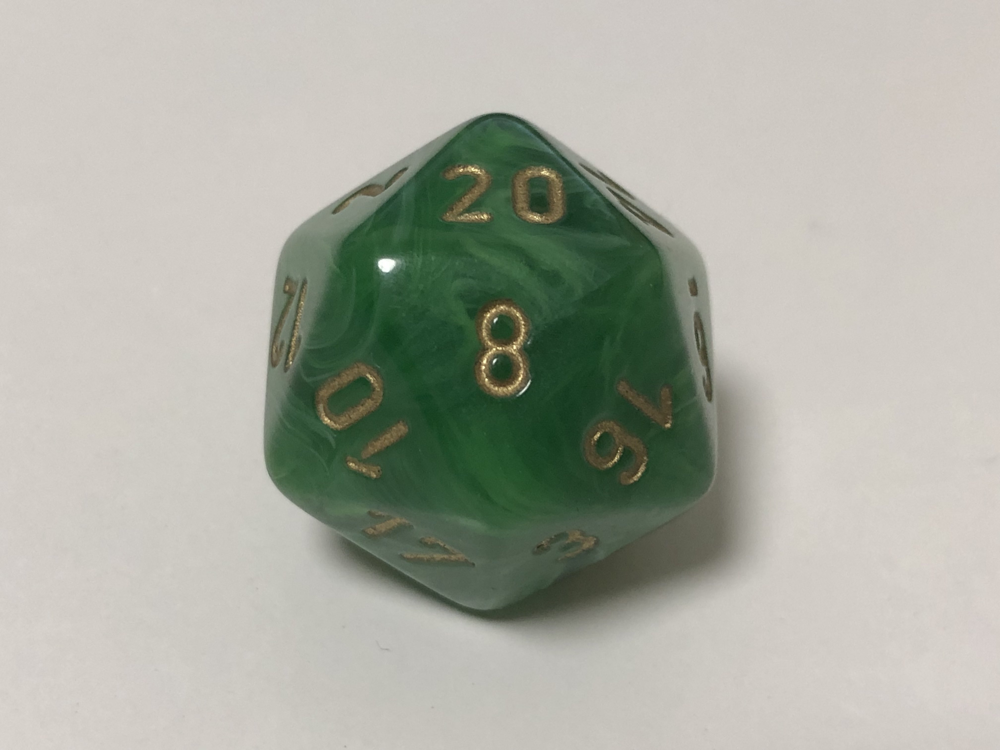

Skills
Web Development
For web development, I primarily use the PEAN stack (I know, funny name, but it means PostgreSQL, Express, Angular, Node).
I've also got some experience developing with Google Cloud Platform and some of their other services/APIs.
Technologies:
Frontend: Angular and React
Backend: Node and Express
Database: PostgreSQL powered by Prisma

C# and Game Development
Game development has always been my main interest. It is the reason I became a software developer in the first
place. Over the years, I've had quite a bit of experience with C# through the Unity game engine.
Other Programming Languages
Other things I've learned and played with. I'm not extremely experienced in any of these (aside from Java), but I know
the basics and would be more than capable of picking them up quickly.
Languages:
Java
Python
C
HLSL

Other Skills and Interests
As I've mentioned, I have always wanted to be a game developer since I was very young, so before I knew
how to code, I learned how to draw and work with music. I've tried to become as well-rounded of a developer
as possible.
As for interests outside of software development, I enjoy playing video games and tabletop RPGs. I create homebrew for Dungeons & Dragons 5e and I'm currently writing a joke module called Zanathar's Guide to a Few Things.
As for interests outside of software development, I enjoy playing video games and tabletop RPGs. I create homebrew for Dungeons & Dragons 5e and I'm currently writing a joke module called Zanathar's Guide to a Few Things.
